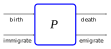
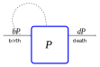
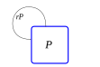

Many organisms reproduce only during specific seasons. For example, annual plants grow from seeds that germinate during the spring, flower in the summer fertilizing new seeds, and disperse the seeds in the autumn for the following year. Some insects have a very specific pattern of growth, passing through various stages of development to emerge for mating at a specific time of the year, with the Mayfly as a particular example. Salmon eggs are fertilized in river tributaries during a specific spawning season; the eggs hatch into salmon fry which, when they are old enough, migrate to the ocean as immature juveniles; and after several years of growing in the ocean, they return as fertile adults to the same tributary for another spawning season. For such organisms, we can think of the new offspring as annual recruits to the overall population, all of which are added in a single burst.
To model a population with clearly delineated reproductive events, we generally desire a model that describes the size of the population at the same point of the reproductive cycle. For example, we might want to look at the sequence of the density of a particular flowering plants each year at a particular study area. Or we might want to count the number of spawning salmon swimming up a particular tributary each year. Even for models that reproduce continuously or multiple times during a season, we might consider that we only observe those population as regular events.
A discrete-time model is a model of the state of a system that is measured at regular-spaced, distinct moments of time. In this section, we introduce the study of populations using discrete-time models. More specifically, we will introduce discrete models involving constant per capita rates. In the next section, we continue the study of discrete models where we look at density dependence.
The other type of model is a continuous-time model in which each state variable is modeled as a continuous function of time. Those models require the introduction of differential equations where the rates of change are characterized by equations involving the derivatives of the functions as one of the state variables. We will look at continuous-time models in a later chapter.
Mathematically, discrete-time models involve modeling using sequences. A sequence is an ordered set of numbers. Suppose that a system has a variable \(x\) that is measured at regular intervals (e.g., a population). We often think of our variable as having an initial value and think of subsequent measurements as counting the number of additional observations. An index variable is a variable that represents the count (or index) through the observations. The value of the variable \(x\) for a given index \(n\) is indicated by writing the index value as a subscript on the variable, such as \(x_n\text{.}\) We will commonly think of the first value of a sequence as corresponding to index \(n=0\text{,}\) so that index values \(n > 0\) are interpreted as the number of intervals following that initial observation. Formally, a sequence is a function where the domain (index-values) consist only of integers.
Example2.2.1.
Consider a population that is recorded at regular intervals with the following values: 199, 217, 236, 257, 264, 301, 312, 315, 331, …. If we let \(P\) represent the population size, then the sequence
has an initial value \(P_0 = 199\) and subsequent values \(P_1 = 217\text{,}\)\(P_2 = 236\text{,}\)\(P_3=257\text{,}\) and so on.
As motivated by our agent-based models, we might think of our population as changing through births and deaths. We might also include immigration and emigration. We can think of death and emigration as sources of loss, with individuals who were counted in the previous population and remain in the population for the next observation as survivors. Individuals that are new to the population, either from birth or from immigration, can be considered as recruits. The total population each year is described by the equation
This is visualized as the graphical model shown in Figure 2.0.1, shown again here.

A mathematical model for a population represents an abstraction of this pattern. First, we will consider each of the terms as variables in a system. Then we will seek mathematical equations that relate these variables in a way that will allow us to predict how the variables change. Because the real system involves stochasticity as well as more variables than we can reasonably include, our equations will only attempt to model enough of the behavior that we deem adequate and necessary to characterize the behavior we seek to describe.
We begin by defining our system. Let \(P\) represent the population. Let \(B\) represent the number of births, or more precisely, the number of individuals in \(P\) that were born since the last observation and have survived for the current census. Let \(D\) represent the number of deaths of individuals that were counted in the previous observation. Let \(E\) and \(I\) represent the number of emigrants (individuals of the previous census who left) and the number of immigrants (counted individuals that arrived since the previous census), respectively.
Each of these variables in the system represent sequences. That is, we will think of the variable counting time cycles, say \(n\text{,}\) as the index. The population at time cycle \(n\) is the sequence value \(P_n\text{.}\) We will often want to talk about two consecutive values in the sequences. \(P_{n+1}\) represents the population in the cycle \(n+1\text{,}\) meaning it is the next population value after \(P_n\text{.}\) Similarly, \(P_{n-1}\) represents the population in the previous time cycle. Note that by our definition, \(B_{n}\) represents the number of births after\(P_{n-1}\) was observed through the time that \(P_n\) is observed.
We create a mathematical model by writing an equation about the sequence values. The new population value is found by taking the previous population value and adding the births and immigrations during the time cycle and subtracting the deaths and emigrations during that same cycle. This is expressed using the equation
The model is not yet complete. We need model equations for each of the terms describing births, deaths, and migration. Our next step is to create equations relating the various terms. In particular, different models correspond to applying different equations that will allow us to find the birth, death and migration rates in terms of the previous population value.
The naive model for reproduction was that the number of births and deaths are proportional to the population. That is, in terms of our sequence, there are constants \(b\) and \(d\) such that
\begin{gather*}
B_{n+1} = b \cdot P_{n},\\
D_{n+1} = d \cdot P_{n}.
\end{gather*}
We call the constants \(b\) and \(d\) the per capita birth rate and the per capita death rate, respectively. The phrase per capita literally means per head, and the per capita rates represent the average per individual contribution to birth and death. Rewriting the equations, we could instead define\(b\) and \(d\) as the following ratios,
\begin{gather*}
b = \frac{B_{n+1}}{P_{n}},\\
d = \frac{D_{n+1}}{P_{n}},
\end{gather*}
which we are modeling as being constant. More advanced models consider these ratios as changing. We require that \(b \ge 0\) and \(0 \le d \le 1\text{.}\)
A visual model for our constant per capita birth and death rates is shown in Figure 2.2.2. The formulas for the individual rates are shown on the rate arrows. In addition, to emphasize the dependence of the birth rate on the population size, a dashed line is drawn from the population’s box circling back to the birth rate. Rates leaving a population (like the death rate) are always assumed to have this dependence.

Figure2.2.2.A visual model for per capita birth and death rates.
In the absence of migration, the constant per capita rate model leads to a dynamic model
\begin{equation*}
P_{n+1} = P_n + b \cdot P_n - d \cdot P_n.
\end{equation*}
where \(r=b-d\) is called the per capita net growth rate. The value of \(r\) physically must satisfy \(r \ge -1\text{,}\) as \(r=-1\) corresponds to no new births (\(b=0\)) and every individual dying (\(d=1\)). This simplified model is often visualized as the graphical model shown in Figure 2.2.3. The birth and death contributions are combined into the loop, which represents both losses (individuals leaving the population) and gains (individuals entering the population). This equation, called the recursive equation, is identical to the equation for compounded interest where \(r\) represents that percent growth rate.

Figure2.2.3.A visual model showing a constant per capita net growth rate.
Just as compound interest results in exponential growth, the constant per capita model results in a population that grows or decays exponentially. Most of our models will not have nice explicit formulas, but this model will. So we start by looking at the exact mathematics describing our dynamics.
The starting population is represented by \(P_0\text{.}\) Our model gives us a relation between \(P_0\) and \(P_1\text{:}\)
This representation of the sequence is called the explicit formula and it allows us to compute the population value \(P_n\) knowing only index \(n\) and the initial value. This geometric sequence corresponds to exponential growth when \(r \gt 0\) and to exponential decay when \(r \lt 0\text{.}\) In the singular case where \(r=0\text{,}\) the population remains constant.
Example2.2.4.
A population with initial size 400 is tracked for one month, during which time there are 50 births and 40 deaths. If the population has constant monthly per capita rates, what will be the predicted population after one year?
Solution.
Constant per capita rates mean that we can compute \(b\) and \(d\) from this observation and use them in our model:
\begin{gather*}
b = \frac{50}{400} = \frac{1}{8} = 0.125, \\
d = \frac{40}{400} = \frac{1}{10} = 0.1.
\end{gather*}
Consequently, our population model is given by the recursive formula
Under the assumptions of our model, namely constant per capita growth rates, we would predict a population of 538 individuals after one year.
How can we create this model in R? Because the model has an explicit formula for the population as a function of time, we first illustrate an explicit approach. For that approach, we generate a sequence to represent time and then calculate the corresponding population values. The time sequence is an array of values called a vector. In R (and other languages like Python and Matlab), it is possible to perform the same calculation on every entry in a vector with a single command. This is called a vectorized calculation. Basic arithmetic and mathematical functions are vectorized.
library(tidyr)
library(ggplot2)
# Set model parameters
b <- 50/400
d <- 40/400
r <- b - d
P0 <- 400
# Create a sequence of times
t_vals <- seq(from = 0, to = 50)
# Calculate the population using explicit model
P_vals <- P0 * (1 + r)^t_vals
# Plot the population
data <- tibble(t = t_vals, P = P_vals)
ggplot(data, mapping = aes(x = t, y = P)) +
geom_point(color = "blue") +
labs(x = "time [months]", y = "Population")
Listing2.2.5.
Below is a live Sage cell which can run self-contained R code. It can not support loading external files, so we can’t use it with our CSV files. But it can do the simulation above if you copy the code into the cell and the press the Evaluate button. You also can try changing some of the parameters in the model to see how the dynamics change.
Sometimes (usually) an explicit formula is not going to be known. We can use the dynamic model equation itself to generate our sequence. The dynamic model gives us an equation to calculate a population at the end of a cycle based on the population at the beginning of the corresponding cycle. Because the equation relates a calculated value based on the previous value, we can only calculate one value at a time, instead of the vectorized all-at-once approach that was possible using the explicit formula. To repeat a calculation in a sequence of steps, we need to use a programming strategy called a loop. This approach is called an iterative calculation, because we iterate (or repeat) our calculation over and over again to find our results.
In R, the most common type of loop is the for-loop. This uses a basic coding pattern for (variable in vector) { command }. The vector will be replaced by an actual vector (array) of values that we want to iterate over, applying the command to each of them in turn. The variable is replaced by a variable name that will store the corresponding value from the vector, one at a time, so that we can refer to the value by a name in command. We can use multiple commands if they are put on separate lines (or separated by semicolons).
We will construct the same sequence of populations using an iterative approach. Our approach will compute two different sequences, one for the time of observation, and the other for the population value. And we will illustrate how we can do this in a tibble data-frame that was built to the size we wanted. R refers to positions in arrays starting at an index 1, but our starting time is typically starting at 0. The variable n in the code will refer to the index and not the time. To refer to the value in a vector at a given index, we use rectangular brackets with the index value inside, as in P_vals[12] would refer to the value in the vector P_vals at index position 12.
library(tidyr)
library(ggplot2)
# Set model parameters
b <- 50/400
d <- 40/400
r <- b - d
P0 <- 400
dt <- 1 # How much time between points
# Set aside space for sequence values
N_pts <- 51 # How many points we want, including initial
t_vals <- double(N_pts)
P_vals <- double(N_pts)
# First cycle starting values
t_vals[1] <- 0
P_vals[1] <- P0
# Iterate through the model for remaining values
for (n in 2:N_pts) {
# New time is previous time + dt
t_vals[n] <- t_vals[n-1] + dt
# New population using model
P_vals[n] <- P_vals[n-1] * (1+r)
}
# Plot the population
data2 <- tibble(t = t_vals, P = P_vals)
ggplot(data2, mapping = aes(x = t, y = P)) +
geom_point(color = "blue") +
labs(x = "time [months]", y = "Population")
Listing2.2.6.
Because computer calculations always work with approximations to exact numbers, computer arithmetic introduces various rounding errors as calculations take place. Different methods of calculation create different rounding errors. Consequently, sequences calculated explicitly are unlikely to exactly match those calculated iteratively. However, these errors are generally small enough that we won’t notice the difference.